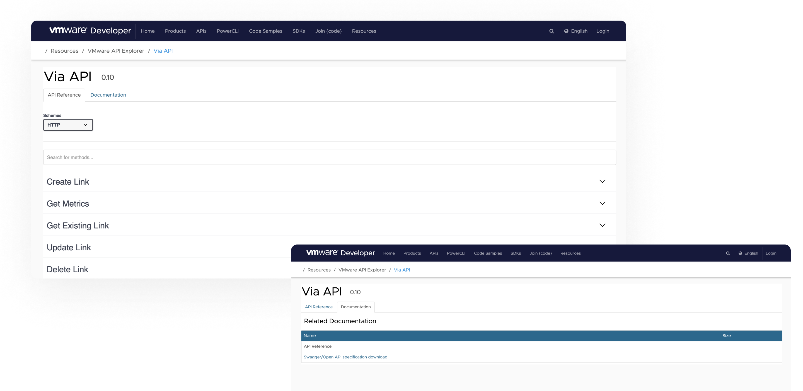

Project Details
Type: API Documentation, Developer Experience
Company: VMware
Platform: Web app, Mobile responsive
Duration: Feb 2021 - April 2021 (FY22Q1)
Team: 3 Engineers, 1 QA, 2 Designers, 1 Project Manager, 1 Product Manager
Tools: Figma, Dovetail, Excel / Notion, Jira
Summary
A pet project turned companywide internal tool that creates smart short links received more fans than the team expected from Engineering. From the critical feedback, we expanded the domain to via.dev.vmware where developers can use the APIs without navigating to the UI to create and manage their links integrated with their app then view the data on it longer on.
This was my first exposure problem-solving for developer experiences that it set the precedent for me to join Mux the following year.
Research & Validation
All right, I'll be honest. I didn't know anything about APIs at this time. I mean, I've heard of it plenty of times, but it was a buzzword that would escape me like the teachers talking in Schulz's Peanuts. When this feature was brought into our team's discussion of how we can improve Via, I had many, many questions for our eng in order for me to catch up along with articles to read - desk research for the first step.
Then there was the question is if we should put a Via developer experience on our roadmap. From feedback sent over from email and discussions that took place in a Slack channel specifically dedicated to the tool (think if Via had its own Discord), that ultimately pieced together a profound story to support our R&D, especially since this tied with our BU's overall business goal to increase employee productivity.
There was also the elephant in the room that opening up Via to lean with the developer experience by putting our APIs to use would astoundingly put our user adoption rate higher - a key metric especially for an early tool.
Then finally, with a virtual round table discussion with VMware eng representing different departments, including our team's eng, of what to put into consideration for the API design to be launched in its first launch.
Discovery
In the first step of discovery mode, I looked through the web of best API Documentation practices along with presenting possible flows to the team before any solution was designed. There were discussions on where this would live which eventually led to a .dev URL and research with potential users just how beneficial which exact APIs would they use more than others.
Research was done in a sign up and drop-in fashion. In the VMware R&D community, I dropped Slack messages and intranet posts if any Via developer user is interested to participate in a 25 min interview regarding how they would use Via APIs in hypothetical scenarios. We had 14 users immediately sign-up that spoke on behalf of utilizing Via to shorten and clean their code since their app's URLs took up so many lines as the main concern. Another was to quickly view metrics of how well their Via links were performing or if they were performing at all straight from their development platform instead of visiting Via from its main UI instead.
Overall, it was about lessening the ins and outs of using Via APIs.
Early Proposal

Originally we wondered and proposed if our internal APIs can live with other public VMware APIs (@ VMware Developer) which didn't go as planned. We later learned that internal APIs couldn't be hidden to public domains or only visible to authorized VMware users or this would complicate the customer-facing environment's back-end. This led to moving and building all of our API shows within Via itself.
Final Designs
Designing for developers in the API world had a unique challenge and interesting observation. Though there wasn't a plethora of screens on a Figma file to ship compared to other workflows I've designed for, it was because much of the developers interaction with Via APIs wasn't done on Via's UI (as it should). That made it much more complicated to know how devs were actually using them from end-to-end, so I had to listen, rewind, and follow-up on feedback interviews following the first release.
Outcome
The aftermath
Thoughout my time working on the productivity space, I found this particular use case interesting and special. Getting more granular on a developer workflow was unique on its own accord because there's so many other factors and intersecting tools to consider for that won't be shared during a user test or a feedback session.
I've always like brain teasers, so this one was refreshing.
What does make me sad because I don't have hard proof of (note: Irish at the time didn't know how to be proud of her work and keep evidence) but very proud were these long, thoughtful but critical emails sent directly to my team from R&D thanking us for the APIs. The quantitative positive of activation and adoption was blantantly clear, but to get the qualitative positive constructive feedback felt absolutely meaningful! To have cult fans that they're active on your tool's Slack is more than cool.
I later went on to realize in my career that if you have a product that works so well, especially in the dev community, you'll get more constructive feedback than troll comments.